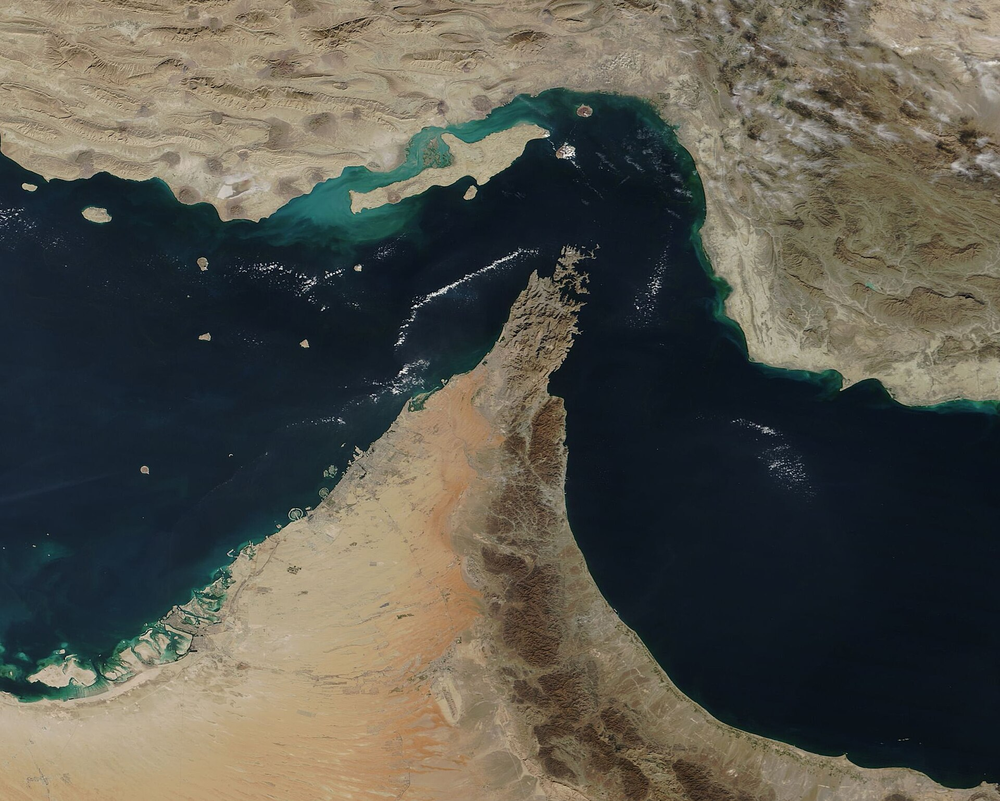

Oil crosses $100 as the Iran war reaches a thirteenth night and Tehran rejects a ceasefire

Brent crude closed above $100 a barrel on Thursday, its first three-figure print in two months, after HouthiInstitutionThe Iran-aligned movement that controls much of Yemen and the coast along the Bab el-Mandeb strait. It has declared a blockade of Saudi Arabia and struck shipping to enforce it. fighters said they had hit two Saudi tankers in the Red Sea and the United States pressed a thirteenth straight night of strikes on Iran. The benchmark rose about 7% to roughly $100.65, and traders began pricing a path toward $120 as attacks widened from the Strait of HormuzPlaceThe chokepoint between the Persian Gulf and the open ocean through which roughly a fifth of the world's seaborne oil passes. Any credible threat to close it moves the global price. to the Red Sea and Kazakhstan halted crude exports through a Caspian pipeline terminal after drone strikes.
CENTCOMInstitutionU.S. Central Command, the military command responsible for the Middle East. It has run the nightly campaign against Iranian coastal, drone, and command targets since the war began in May. said the latest wave, completed around 9 p.m. Eastern, again targeted Iranian command centers, drone stores, and coastal surveillance sites meant to threaten civilian mariners. Hours earlier, Iran rejected a temporary ceasefire that the Iraqi prime minister had carried to Tehran, telling mediators it had no interest in a pause that left the question of control over Hormuz unresolved. President Trump signaled the fighting would go on, saying Iran was "not ready yet" to deal and telling Axios he was weighing "a massive attack."
The move above $100 turns a distant war into a domestic problem. An oil shock lands directly on the Federal Reserve's inflation mandate at the moment a new chair is being pressed to cut rates, and it raises the cost of everything that moves, from freight to jet fuel, just as second-quarter earnings season tries to read the consumer. For markets that had treated the Gulf as background noise for two months, the tanker attacks and the blockade made the risk suddenly legible, and priced.
"They would like to do something, but I say they're not ready yet. They need more of the same."
Why it mattersOil above $100 is the channel that carries a Gulf war into every equity and credit book at once, reviving inflation risk into a rate-cut fight and repricing the macro backdrop against which every deal, filing, and IPO this quarter has to be underwritten.
Framing noteThe right (Fox News) foregrounds Iranian losses and Trump's resolve to keep striking; the left-leaning coverage (CNN, CBS News) leads with the oil shock, the mounting American costs, and the absence of an exit.